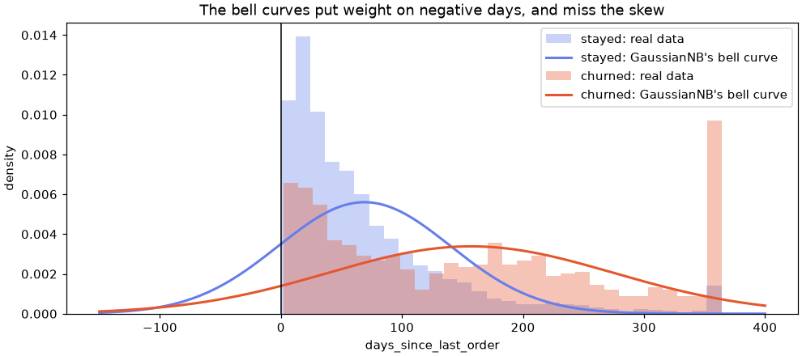
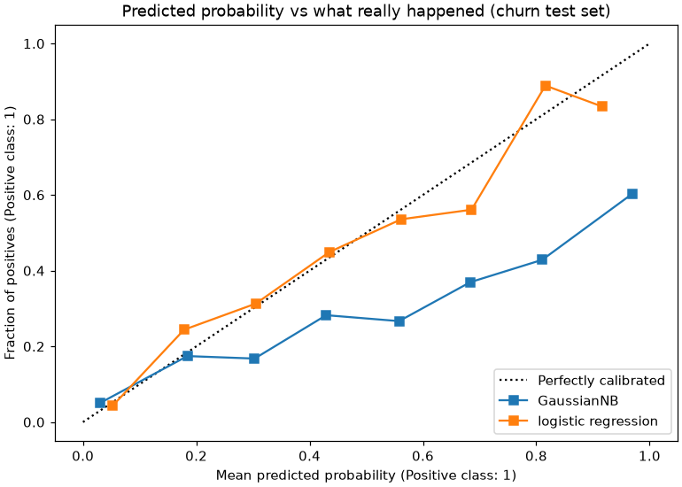

🎲 Lesson 4.2: Naive Bayes
Build a classifier out of nothing but counting and one rule from probability, and find out why a model with a "wrong" assumption is still one of the fastest, most useful baselines in machine learning.
🎯 Learning Objectives
By the end of this lesson, you will be able to:
- Compute a posterior probability by hand with Bayes' rule, starting from counts in a table
- Explain the "naive" independence assumption and show what it costs when features repeat each other
- Turn review text into word counts with
CountVectorizerand classify it withMultinomialNBinside a pipeline - Explain what the smoothing parameter
alphaprevents, and choose between the Multinomial, Bernoulli, Complement and Gaussian variants - Tell a model that ranks well apart from one whose probabilities you can take at face value
In This Lesson
🧭 Reasoning with Evidence
Pinecrest Outfitters receives thousands of product reviews. Most are happy, but the unhappy ones matter most: a customer who writes "leaked on the first night, returned it" is a customer the care team should reach before they leave for good. Nobody has time to read every review, so Pinecrest wants a model that reads them first and puts the likely complaints at the top of the pile.
In Lesson 4.1 you met a model that classifies by finding similar past examples. Naive Bayes takes a different route: it counts. How often does the word "returned" appear in unhappy reviews compared with happy ones? How often does "love"? It then combines those counts with one rule from probability, Bayes' rule, to produce a probability for each class.
💡 Mental Model: The Seasoned Store Manager
Picture a store manager who has read every comment card for years. Before reading a new card, they already have a hunch: three cards in four are happy. That hunch is the prior. Then they read the card one clue at a time. "Returned" nudges them strongly toward unhappy, because they have seen that word on many unhappy cards and almost no happy ones. "Love" nudges them back. Each clue multiplies their odds up or down. When they finish the card, the hunch has become a judgment: the posterior.
The manager has one simplifying habit: they weigh each word on its own, as if the words did not influence each other. That habit is the "naive" in Naive Bayes. It is often wrong, and the manager is still surprisingly good at the job.
🤔 Why This Matters
Naive Bayes trains in a fraction of a second, needs no feature scaling, copes with tens of thousands of word features, and works with little data. Early email spam filters were built on it, and it remains a standard first baseline for text. Understanding it also teaches you Bayes' rule, the idea behind every model that "updates a belief with evidence", and a hard lesson about the difference between a model that ranks well and one whose probabilities you can trust.
🧮 Bayes' Rule from Counts
Load the reviews. Each has a star rating from 1 to 5 and a short text.
import pandas as pd
from sklearn.model_selection import train_test_split
reviews = pd.read_csv("data/reviews.csv")
print(reviews.shape)
print(reviews["rating"].value_counts().sort_index())Output
(4000, 8)
rating
1 230
2 558
3 905
4 1093
5 1214
Name: count, dtype: int64Three-star reviews are honestly mixed, so for a clean yes-or-no target keep the 1- and 2-star reviews (negative) and the 4- and 5-star reviews (positive). The target column positive is 1 for a happy review and 0 for an unhappy one. Split exactly as in earlier lessons: a stratified quarter for testing, random_state=42 so your rows match this page.
labeled = reviews[reviews["rating"] != 3].copy()
labeled["positive"] = (labeled["rating"] >= 4).astype(int)
train, test = train_test_split(labeled, test_size=0.25, stratify=labeled["positive"], random_state=42)
X_train, y_train = train["text"], train["positive"]
X_test, y_test = test["text"], test["positive"]
print(len(labeled), "labeled reviews,", f"{labeled['positive'].mean():.1%} positive")
print(len(train), "train,", len(test), "test")
for rating, text in train[["rating", "text"]].head(3).itertuples(index=False):
print(rating, "stars:", text)Output
3095 labeled reviews, 74.5% positive
2321 train, 774 test
4 stars: I am fairly new to backpacking. It showed up two days early. It is a great value. This one fits true to size.
5 stars: My partner has the same one. It arrived quickly.
1 stars: Save your money. The ultralight shelter is heavier than advertised.Notice that X_train is a single column of text, a pandas Series. That is unusual (Lesson 1.1 insisted on a 2-D table), and it works here because the text vectorizer you will meet in a moment expects exactly one column of documents.
One word, by hand
Take a single clue: does the review contain the word "returned"? Bayes' rule turns "how common is this word among unhappy reviews" into "how likely is a review with this word to be unhappy":
🔑 Bayes' Rule
P(negative | word) = P(word | negative) × P(negative) / P(word)
P(negative) is the prior: the share of negative reviews before you read anything. P(word | negative) is the likelihood: how often the word shows up in negative reviews. P(word) is how often it shows up at all. The result, P(negative | word), is the posterior: your updated belief after seeing the word.
has_word = X_train.str.contains(r"\breturned\b", case=False)
is_neg = y_train == 0
p_neg = is_neg.mean()
p_word_given_neg = has_word[is_neg].mean()
p_word_given_pos = has_word[~is_neg].mean()
p_word = has_word.mean()
posterior = p_word_given_neg * p_neg / p_word
print(f"prior P(negative) {p_neg:.3f}")
print(f"P(word | negative) {p_word_given_neg:.4f}")
print(f"P(word | positive) {p_word_given_pos:.4f}")
print(f"posterior P(negative|word) {posterior:.3f}")
print(f"check by direct counting {is_neg[has_word].mean():.3f}")Output
prior P(negative) 0.255
P(word | negative) 0.0406
P(word | positive) 0.0029
posterior P(negative|word) 0.828
check by direct counting 0.828Before reading, the odds that a review is negative are about one in four. "Returned" appears in about 4% of negative reviews and fewer than 0.3% of positive ones, a ratio of roughly 14 to 1. That strong ratio lifts the posterior from 0.25 to 0.83. With a single clue, Bayes' rule gives exactly the same number as counting directly, which is the check on the last line. The rule earns its keep when there are many clues at once.
🔗 The Naive Part: Multiply the Clues
A real review has 20 or so words. To use Bayes' rule exactly, you would need P(this exact combination of words | negative), and no two reviews share the exact same combination, so there is nothing to count. Naive Bayes sidesteps the problem with one assumption:
💡 The Naive Assumption
Within each class, the features are independent: once you know a review is negative, seeing "leaked" tells you nothing extra about whether it also says "returned". With that assumption, the probability of the whole review is just the product of one probability per word, and each of those is easy to count.
score(class) = P(class) × P(word 1 | class) × P(word 2 | class) × ...
The model computes this score for every class and turns the scores into probabilities that add up to 1. In practice it adds logarithms instead of multiplying, because a product of 20 small numbers underflows to zero on a computer.
Is the assumption true? Almost never. "Leaked" and "returned" are obviously related. The surprising part is how little it often matters for ranking: if the evidence for "negative" is strong, multiplying slightly too many factors still points the right way. Where it does hurt is in the probabilities themselves, which come out too extreme. You will see both effects in this lesson.
📝 From Text to Word Counts
Models need numbers. The simplest way to turn text into numbers is a bag of words: one column per word in the vocabulary, one row per document, and each cell counts how often that word appears. Word order is thrown away. scikit-learn's CountVectorizer builds it. It is a transformer, so it has fit (learn the vocabulary) and transform (count).
from sklearn.feature_extraction.text import CountVectorizer
demo = ["The tent leaked. Returned it.", "Great tent, great price."]
demo_vec = CountVectorizer()
demo_counts = demo_vec.fit_transform(demo)
print(demo_vec.get_feature_names_out())
print(demo_counts.toarray())
print(type(demo_counts).__name__)Output
['great' 'it' 'leaked' 'price' 'returned' 'tent' 'the']
[[0 1 1 0 1 1 1]
[2 0 0 1 0 1 0]]
csr_matrixThe vectorizer lowercased everything, dropped punctuation and one-letter tokens, and sorted the vocabulary alphabetically. "great" appears twice in the second review, so its count is 2. The result is a sparse matrix (csr_matrix): it stores only the non-zero cells. That matters on the real data:
vec = CountVectorizer()
counts_train = vec.fit_transform(X_train)
print(counts_train.shape)
print(f"non-zero cells: {counts_train.nnz:,} of {counts_train.shape[0] * counts_train.shape[1]:,}")Output
(2321, 333)
non-zero cells: 40,981 of 772,893Pinecrest's reviews are short and use a modest vocabulary of 333 distinct words, yet each review uses only about 18 of them, so about 95% of the cells are zero. A dense table would waste memory storing zeros; with the vocabulary of a real review site (tens of thousands of words) it would not fit at all. Multinomial Naive Bayes works directly on the sparse counts. Lesson 11.1 goes much further with text (TF-IDF weighting, word pairs, logistic regression); here you need only counts.
🚀 MultinomialNB on Pinecrest Reviews
MultinomialNB is the Naive Bayes variant for counts. It estimates, for each class, the probability of each word, then scores a document with the multiplied clues. Put the vectorizer and the model in one pipeline (Lesson 2.2) so that the vocabulary is learned from the training reviews only, and compare with the do-nothing baseline.
from sklearn.pipeline import make_pipeline
from sklearn.naive_bayes import MultinomialNB
from sklearn.dummy import DummyClassifier
baseline = DummyClassifier(strategy="most_frequent").fit(X_train, y_train)
nb = make_pipeline(CountVectorizer(), MultinomialNB())
nb.fit(X_train, y_train)
print(f"baseline accuracy {baseline.score(X_test, y_test):.3f}")
print(f"Naive Bayes accuracy {nb.score(X_test, y_test):.3f}")Output
baseline accuracy 0.745
Naive Bayes accuracy 0.857Saying "positive" every time is right 74.5% of the time; Naive Bayes reaches 85.7%. For Pinecrest the interesting class is the negative one, so look at it directly with the metrics from Lesson 1.4:
from sklearn.metrics import classification_report, roc_auc_score
pred = nb.predict(X_test)
print(classification_report(y_test, pred, target_names=["negative", "positive"], digits=3))
print(f"ROC AUC {roc_auc_score(y_test, nb.predict_proba(X_test)[:, 1]):.3f}")Output
precision recall f1-score support
negative 0.692 0.787 0.736 197
positive 0.924 0.880 0.902 577
accuracy 0.857 774
macro avg 0.808 0.834 0.819 774
weighted avg 0.865 0.857 0.859 774
ROC AUC 0.921The model catches about four in five negative reviews (recall 0.787), and when it says "negative" it is right about seven times in ten (precision 0.692). The ROC AUC of 0.92 says its ranking is strong: pick a random negative and a random positive review, and 92% of the time the negative one gets the lower "positive" probability. For a triage list, that ranking is what you will use.
👀 What did it count?
The fitted model stores the log of P(word | class) for every word in feature_log_prob_ (one row per class, in the order of classes_). The difference between the two rows is the log of the likelihood ratio: how many times more likely a word is in a positive review than a negative one. That is exactly the "nudge" each word gives.
vocab = nb.named_steps["countvectorizer"].get_feature_names_out()
mnb = nb.named_steps["multinomialnb"]
print(mnb.classes_, mnb.class_count_)
log_ratio = pd.Series(mnb.feature_log_prob_[1] - mnb.feature_log_prob_[0], index=vocab).sort_values()
print("most negative words:", log_ratio.head(8).round(2).to_dict())
print("most positive words:", log_ratio.tail(8).round(2).to_dict())Output
[0 1] [ 591. 1730.]
most negative words: {'save': -3.4, 'your': -3.4, 'very': -3.29, 'disappointed': -3.21, 'regret': -3.2, 'do': -3.11, 'nothing': -2.64, 'does': -2.64}
most positive words: {'needed': 2.87, 'exactly': 2.87, 'five': 3.43, 'stars': 3.43, 'from': 3.43, 'regrets': 3.46, 'no': 3.46, 'love': 3.58}The training set holds 591 negative and 1,730 positive reviews. The negative words come from phrases like "save your money", "very disappointed" and "does nothing"; the positive ones from "five stars", "no regrets", "exactly what I needed" and "love". A log ratio of -3.4 means the word is about e3.4 ≈ 30 times more frequent in negative reviews. Notice "no" among the positive words: in these reviews it mostly appears in "no regrets". The model knows nothing about meaning, only about which class a word turned up in. These are the model's own counts, so read them as "what the model relies on", not as "what makes customers unhappy": that would be a causal claim no classifier can make.
Try your own reviews
new_reviews = [
"Leaked on the first night and the zipper broke. Returned it.",
"Light, warm and packs down small. Would buy again.",
"Not bad at all for the price.",
]
for text, p in zip(new_reviews, nb.predict_proba(new_reviews)[:, 1]):
print(f"P(positive) = {p:.3f} {text}")Output
P(positive) = 0.063 Leaked on the first night and the zipper broke. Returned it.
P(positive) = 0.302 Light, warm and packs down small. Would buy again.
P(positive) = 0.745 Not bad at all for the price.The first review is easy. The second is plainly happy, yet the model gives it only 0.30. Look at its words through the model's eyes: in Pinecrest's reviews, "small" mostly appears in "runs small", "again" in "never again", and "would" and "buy" lean negative because "would not buy again" is a common complaint. Word by word, those are negative clues, and a bag of words cannot see that "would buy again" is the opposite of "would not buy again". Words the vectorizer never saw in training, such as "packs" and "price", are silently ignored. The third review comes out positive (0.745), but more by luck than understanding: "not" is a clear negative clue, while "bad" happens to lean slightly positive because it appears in the stock phrase "not bad at all". Lesson 11.1 handles negation better with word pairs ("not bad" as one feature), and the project here tries them.
🧂 Smoothing: Never Say Never
What happens when a word in a new review never appeared in one class's training reviews? Its count is zero, so P(word | class) is zero, and one zero factor makes the whole product zero, however strong the rest of the evidence. One word gets a veto.
This is not hypothetical. Count how often "love" appears in each class of the training reviews:
love = counts_train[:, vec.vocabulary_["love"]].toarray().ravel()
print("'love' in negative reviews:", love[y_train.to_numpy() == 0].sum())
print("'love' in positive reviews:", love[y_train.to_numpy() == 1].sum())Output
'love' in negative reviews: 0
'love' in positive reviews: 106Never once in a negative review. Now give the model an angry review that happens to say "love", once with almost no smoothing and once with the default:
tricky = ["Leaked at the seams, fell apart after three trips and I returned it. Love the color though."]
for alpha in [1e-10, 1.0]:
model = make_pipeline(CountVectorizer(), MultinomialNB(alpha=alpha)).fit(X_train, y_train)
print(f"alpha={alpha:g} P(negative), P(positive) = {model.predict_proba(tricky).round(3)[0]}")Output
alpha=1e-10 P(negative), P(positive) = [0. 1.]
alpha=1 P(negative), P(positive) = [0.973 0.027]With almost no smoothing, the single word "love" overrules "leaked", "fell apart" and "returned": the model is 100% sure the review is positive. With alpha=1.0 the evidence is weighed sensibly and the review comes out 97% negative.
🔑 Additive (Laplace) Smoothing
alpha adds a small pretend count to every word in every class before the probabilities are computed: P(word | class) = (count + alpha) / (total words in class + alpha × vocabulary size). No word ever gets probability zero, so no single word can veto the rest. alpha=1 (the default) is classic Laplace smoothing. Smaller values trust the counts more; larger values flatten every word toward "no information". It is a hyperparameter: choose it with cross-validation, as the project does.
🧰 Four Flavors of Naive Bayes
All Naive Bayes models share Bayes' rule and the independence assumption. They differ in how they model one feature within one class:
| Class | Each feature is | Typical use |
|---|---|---|
MultinomialNB | a count (how many times) | word counts, the text default |
ComplementNB | a count, estimated from all the other classes | text with unbalanced classes |
BernoulliNB | present or absent (0/1) | short texts, yes/no flags |
GaussianNB | a number from a bell curve per class | continuous measurements |
scikit-learn also has CategoricalNB for columns of category codes. Because they share the estimator API, comparing the three text variants is one loop. BernoulliNB gets CountVectorizer(binary=True), which records only whether each word appears.
from sklearn.naive_bayes import BernoulliNB, ComplementNB
variants = {
"MultinomialNB": make_pipeline(CountVectorizer(), MultinomialNB()),
"ComplementNB": make_pipeline(CountVectorizer(), ComplementNB()),
"BernoulliNB": make_pipeline(CountVectorizer(binary=True), BernoulliNB()),
}
for name, model in variants.items():
model.fit(X_train, y_train)
auc = roc_auc_score(y_test, model.predict_proba(X_test)[:, 1])
print(f"{name:14s} accuracy {model.score(X_test, y_test):.3f} AUC {auc:.3f}")Output
MultinomialNB accuracy 0.857 AUC 0.921
ComplementNB accuracy 0.835 AUC 0.921
BernoulliNB accuracy 0.859 AUC 0.923All three land within a couple of points of each other. Reviews are short, so a word rarely appears twice and counts carry little more information than presence. On longer documents Multinomial usually pulls ahead, and ComplementNB tends to help when one class is much rarer. The honest conclusion: try two or three, they cost a fraction of a second each.
📈 GaussianNB on Numeric Features
Naive Bayes is not only for text. GaussianNB assumes that, within each class, each numeric feature follows a bell curve (a Gaussian, or normal, distribution). Fitting is just computing a mean and a variance per feature per class. Try it on the churn data from Lesson 1.1, with the same features and the same split.
from sklearn.naive_bayes import GaussianNB
customers = pd.read_csv("data/customers_churn.csv")
features = ["tenure_months", "orders_12m", "spend_12m", "avg_order_value", "days_since_last_order",
"returns_12m", "return_rate", "support_tickets_12m", "discount_share", "app_user"]
Xc_train, Xc_test, yc_train, yc_test = train_test_split(
customers[features], customers["churned"], test_size=0.25, stratify=customers["churned"], random_state=42
)
gnb = GaussianNB().fit(Xc_train, yc_train)
print("priors:", gnb.class_prior_.round(3))
learned = pd.DataFrame({"mean_stayed": gnb.theta_[0], "mean_churned": gnb.theta_[1],
"sd_stayed": gnb.var_[0] ** 0.5, "sd_churned": gnb.var_[1] ** 0.5}, index=features)
print(learned.loc[["days_since_last_order", "discount_share", "tenure_months"]].round(2))Output
priors: [0.835 0.165]
mean_stayed mean_churned sd_stayed sd_churned
days_since_last_order 68.98 156.94 71.21 117.90
discount_share 0.19 0.29 0.17 0.21
tenure_months 42.26 37.53 29.45 35.24That is the entire model: two priors and a mean and standard deviation per feature per class. Churners went about 157 days since their last order on average, against 69 for customers who stayed. No scaling is needed, because each feature is measured against its own bell curve. But is a bell curve a good description? Draw it.
import numpy as np
import matplotlib.pyplot as plt
from scipy.stats import norm
col = features.index("days_since_last_order")
grid = np.linspace(-150, 400, 300)
fig, ax = plt.subplots(figsize=(9, 4), layout="constrained")
for cls, color, name in [(0, "#667eea", "stayed"), (1, "#e4572e", "churned")]:
values = Xc_train.loc[yc_train == cls, "days_since_last_order"]
ax.hist(values, bins=30, density=True, alpha=0.35, color=color, label=f"{name}: real data")
ax.plot(grid, norm.pdf(grid, gnb.theta_[cls, col], gnb.var_[cls, col] ** 0.5), color=color,
linewidth=2, label=f"{name}: GaussianNB's bell curve")
ax.axvline(0, color="black", linewidth=1)
ax.set_xlabel("days_since_last_order")
ax.set_ylabel("density")
ax.set_title("The bell curves put weight on negative days, and miss the skew")
ax.legend()
plt.show()
The curves get the big picture right (churners are further to the right) but miss the shape: customers who stayed are piled up near zero days, and both curves spill into impossible negative values. The model will still use this feature, just imperfectly. Now compare it with logistic regression on the same split:
from sklearn.linear_model import LogisticRegression
from sklearn.preprocessing import StandardScaler
logreg = make_pipeline(StandardScaler(), LogisticRegression()).fit(Xc_train, yc_train)
for name, model in [("GaussianNB", gnb), ("logistic regression", logreg)]:
auc = roc_auc_score(yc_test, model.predict_proba(Xc_test)[:, 1])
print(f"{name:20s} accuracy {model.score(Xc_test, yc_test):.3f} AUC {auc:.3f}")Output
GaussianNB accuracy 0.815 AUC 0.778
logistic regression accuracy 0.848 AUC 0.823GaussianNB falls behind on both measures, and its accuracy (0.815) is even below the do-nothing baseline of 0.835. Part of the reason is the poor bell curves. A bigger part is the naive assumption itself. Remember from Lesson 1.1 that spend_12m is essentially orders_12m times avg_order_value, and returns_12m overlaps with return_rate. Naive Bayes treats each of them as a fresh, independent clue, so the same evidence gets counted two or three times. Remove the copies and watch:
independent = [f for f in features if f not in ("spend_12m", "avg_order_value", "returns_12m", "return_rate")]
gnb_lean = GaussianNB().fit(Xc_train[independent], yc_train)
auc = roc_auc_score(yc_test, gnb_lean.predict_proba(Xc_test[independent])[:, 1])
print(independent)
print(f"GaussianNB, {len(independent)} features: accuracy {gnb_lean.score(Xc_test[independent], yc_test):.3f} AUC {auc:.3f}")Output
['tenure_months', 'orders_12m', 'days_since_last_order', 'support_tickets_12m', 'discount_share', 'app_user']
GaussianNB, 6 features: accuracy 0.845 AUC 0.813Fewer features, better model: AUC jumps from 0.778 to 0.813 and accuracy from 0.815 to 0.845. For most models, dropping information hurts or does nothing. For Naive Bayes, dropping duplicated information helps, because it stops the double counting. Lesson 2.4's feature selection pays off more for Naive Bayes than for almost any other model.
⚠️ Naive Bayes Is Rarely the Best Tabular Model
Even the lean GaussianNB stays below logistic regression here, and Module 5's tree models do better still. On numeric business data, use GaussianNB as a quick baseline or when you have very little data, not as the final model. Its home ground is text and other high-dimensional count data.
🎯 Good Rankings, Overconfident Probabilities
Double counting has a second effect. Multiplying the same evidence several times pushes the scores toward the extremes, so Naive Bayes probabilities tend to be too close to 0 or 1. A calibration curve (or reliability diagram) checks this: group the test customers by predicted probability, and compare each group's average prediction with the share who really churned. A well-calibrated model sits on the diagonal.
from sklearn.calibration import CalibrationDisplay
fig, ax = plt.subplots(figsize=(7, 5), layout="constrained")
CalibrationDisplay.from_estimator(gnb, Xc_test, yc_test, n_bins=8, name="GaussianNB", ax=ax)
CalibrationDisplay.from_estimator(logreg, Xc_test, yc_test, n_bins=8, name="logistic regression", ax=ax)
ax.set_title("Predicted probability vs what really happened (churn test set)")
plt.show()
p_gnb = gnb.predict_proba(Xc_test)[:, 1]
confident = p_gnb > 0.9
print(f"GaussianNB says above 90% for {confident.sum()} customers; {yc_test[confident].mean():.1%} of them churned")Output
GaussianNB says above 90% for 102 customers; 60.8% of them churned
GaussianNB is above 90% sure for 102 customers, and only about 61% of them churned. If Pinecrest used those probabilities to estimate how much revenue is at risk, it would overestimate badly. For a shortlist, which only needs the order, overconfidence matters much less.
✅ Rank with It; Recalibrate Before You Quote It
Use Naive Bayes probabilities for sorting and thresholds you tune on validation data. If you need probabilities you can quote ("this customer has a 30% chance of leaving"), wrap the model in CalibratedClassifierCV, which learns a correction on held-out folds. The bonus challenge at the end tries it.
⚠️ Common Mistakes
Most Naive Bayes mistakes come from giving a variant the wrong kind of input. The messages are clear once you know which variant expects what.
1. Raw Text Straight into the Model
MultinomialNB().fit(train[["text"]], y_train)Error
ValueError: could not convert string to float: 'I am fairly new to backpacking. It showed up two days early. It is a great value. This one fits true to size.'What it means: the model received sentences where it expects numbers. Fix: put a CountVectorizer in front of it in a pipeline, and pass the text as a single column (a Series), as in make_pipeline(CountVectorizer(), MultinomialNB()).
2. Scaled (Negative) Values into MultinomialNB
make_pipeline(StandardScaler(), MultinomialNB()).fit(Xc_train, yc_train)Error
ValueError: Negative values in data passed to MultinomialNB (input X).What it means: a count can never be negative, and StandardScaler produced negative numbers. Habits from logistic regression and k-nearest neighbors (always scale) do not carry over. Fix: give MultinomialNB, ComplementNB and BernoulliNB counts or 0/1 flags, unscaled. For continuous measurements use GaussianNB, which needs no scaling.
3. Sparse Word Counts into GaussianNB
make_pipeline(CountVectorizer(), GaussianNB()).fit(X_train, y_train)Error
TypeError: Sparse data was passed for X, but dense data is required. Use '.toarray()' to convert to a dense numpy array.What it means: GaussianNB works on dense tables and refuses the sparse matrix a vectorizer returns. Fix: do not convert with .toarray() to make it run: word counts are not bell-shaped, and a dense matrix of a large vocabulary can exhaust memory. Use MultinomialNB, ComplementNB or BernoulliNB for text.
4. Turning Smoothing Off
import warnings
with warnings.catch_warnings(record=True) as caught:
warnings.simplefilter("always")
no_smoothing = make_pipeline(CountVectorizer(), MultinomialNB(alpha=0)).fit(X_train, y_train)
p = no_smoothing.predict_proba(tricky)
print(caught[0].category.__name__, caught[0].message)
print(p.round(3))Output
RuntimeWarning divide by zero encountered in log
[[0. 1.]]What it means: with alpha=0, words never seen in a class get probability zero, the logarithm of zero is minus infinity, and NumPy warns about it. The prediction is then decided by vetoes, not evidence. Fix: keep alpha above zero; tune it over values such as 0.1 to 2 with cross-validation.
5. A Stop-Word List That Deletes "not"
Removing common words ("the", "and", "it") sounds like harmless cleanup, and CountVectorizer(stop_words="english") does it in one argument. No error appears. Check what the list contains:
from sklearn.feature_extraction.text import ENGLISH_STOP_WORDS
print("not" in ENGLISH_STOP_WORDS, "never" in ENGLISH_STOP_WORDS, "no" in ENGLISH_STOP_WORDS)
with_stop = make_pipeline(CountVectorizer(stop_words="english"), MultinomialNB()).fit(X_train, y_train)
print(f"accuracy with stop words removed {with_stop.score(X_test, y_test):.3f} (all words kept: {nb.score(X_test, y_test):.3f})")Output (no error, and that is the problem)
True True True
accuracy with stop words removed 0.849 (all words kept: 0.857)What happened: the built-in English stop-word list contains "not", "never" and "no", the very words that carry negative sentiment, so the model gets worse without a word of warning. Fix: keep stop words for sentiment tasks, or pass your own short list. Always compare a "cleanup" step against the model without it.
🛠️ Project: Review Triage for Customer Care
Pinecrest's customer-care team wants two things each week: the mixed 3-star reviews ranked so the most unhappy ones are read first, and a short list of reviews whose star rating disagrees with the text (a customer who clicked the wrong star, or a happy rating on a complaint). You will tune a Naive Bayes text model with cross-validation, check it once on the test set, then use it on reviews it was never trained for. Work in a new notebook called lesson_4_2_project. Allow about 40 minutes.
🛠️ Step 1: Load, label and split (5 min)
Same labels and split as the lesson, so the numbers line up.
import pandas as pd
from sklearn.model_selection import train_test_split
reviews = pd.read_csv("data/reviews.csv")
labeled = reviews[reviews["rating"] != 3].copy()
labeled["positive"] = (labeled["rating"] >= 4).astype(int)
three_star = reviews[reviews["rating"] == 3]
train, test = train_test_split(labeled, test_size=0.25, stratify=labeled["positive"], random_state=42)
X_train, y_train = train["text"], train["positive"]
X_test, y_test = test["text"], test["positive"]
print(len(train), len(test), len(three_star), test["review_id"].head(3).tolist())Output
2321 774 905 ['R02194', 'R02522', 'R03559']🛠️ Step 2: Compare single words with word pairs (10 min)
ngram_range=(1, 2) adds every pair of neighboring words ("not bad", "would buy") as an extra feature, which gives the model a little word order. Compare the two with 5-fold cross-validation on the training set only (Lesson 1.3), scoring ROC AUC because the team will use the ranking.
from sklearn.feature_extraction.text import CountVectorizer
from sklearn.naive_bayes import MultinomialNB
from sklearn.pipeline import make_pipeline
from sklearn.model_selection import cross_val_score
for ngrams in [(1, 1), (1, 2)]:
pipe = make_pipeline(CountVectorizer(ngram_range=ngrams), MultinomialNB())
scores = cross_val_score(pipe, X_train, y_train, cv=5, scoring="roc_auc")
print(f"ngram_range={ngrams} CV AUC {scores.mean():.3f} +/- {scores.std():.3f}")Output
ngram_range=(1, 1) CV AUC 0.899 +/- 0.012
ngram_range=(1, 2) CV AUC 0.912 +/- 0.013Word pairs help by about a point of AUC, roughly the size of the fold-to-fold wobble, so treat it as a small, plausible gain rather than a sure one. Keep them.
🛠️ Step 3: Choose the smoothing strength (5 min)
Try a handful of alpha values with the same cross-validation. The step name in the pipeline is multinomialnb, so set_params(multinomialnb__alpha=...) changes it.
pipe = make_pipeline(CountVectorizer(ngram_range=(1, 2)), MultinomialNB())
for alpha in [0.1, 0.3, 1.0, 3.0]:
pipe.set_params(multinomialnb__alpha=alpha)
scores = cross_val_score(pipe, X_train, y_train, cv=5, scoring="roc_auc")
print(f"alpha={alpha:<4} CV AUC {scores.mean():.4f}")Output
alpha=0.1 CV AUC 0.9114
alpha=0.3 CV AUC 0.9123
alpha=1.0 CV AUC 0.9118
alpha=3.0 CV AUC 0.9090The differences are tiny: Naive Bayes is not fussy about alpha as long as it is not near zero. Take the best value and move on.
🛠️ Step 4: One honest check on the test set (5 min)
Fit the chosen pipeline on all the training reviews, then score the test set once. The team cares about the negative class, so report its recall and precision.
from sklearn.metrics import roc_auc_score, recall_score, precision_score
triage = make_pipeline(CountVectorizer(ngram_range=(1, 2)), MultinomialNB(alpha=0.3)).fit(X_train, y_train)
p_negative = triage.predict_proba(X_test)[:, 0]
pred = triage.predict(X_test)
print(f"accuracy {triage.score(X_test, y_test):.3f} (baseline 0.745)")
print(f"ROC AUC {roc_auc_score(y_test, 1 - p_negative):.3f}")
print(f"negative reviews caught (recall) {recall_score(y_test, pred, pos_label=0):.3f}")
print(f"flagged that really are negative (precision) {precision_score(y_test, pred, pos_label=0):.3f}")Output
accuracy 0.868 (baseline 0.745)
ROC AUC 0.934
negative reviews caught (recall) 0.843
flagged that really are negative (precision) 0.700Column 0 of predict_proba is the negative class, because classes_ is [0, 1]. pos_label=0 tells the metrics which class you are asking about.
🛠️ Step 5: Rank the 3-star reviews (5 min)
The model never saw a 3-star review. Use it to sort them by how negative they sound, and read the top of the list.
ranked = three_star[["review_id", "text"]].copy()
ranked["p_negative"] = triage.predict_proba(three_star["text"])[:, 0]
ranked = ranked.sort_values("p_negative", ascending=False)
print(f"3-star reviews the model reads as negative (p > 0.5): {(ranked['p_negative'] > 0.5).sum()} of {len(ranked)}")
for row in ranked.head(3).itertuples():
print(f"{row.p_negative:.3f} {row.review_id} {row.text}")Output
3-star reviews the model reads as negative (p > 0.5): 457 of 905
1.000 R00059 Got it during the spring sale. This one is not waterproof at all. It fell apart after three trips. However it is way too tight in the shoulders.
1.000 R00109 Great purchase. Ordered it online in the fall. The paddle leash let water in within an hour. It is far too expensive for the quality. The paddle leash is way too tight in the shoulders. Although it fell apart after three trips.
1.000 R03884 Would buy again. This climbing pants costs twice what it should. This climbing pants is not warm enough for cold nights. This climbing pants shipped the wrong color. But it shipped the wrong color.🛠️ Step 6: Flag stars that disagree with the text, and save (10 min)
Score every labeled review in the test set (the model has not trained on them) and flag the ones where the model is very confident the text says the opposite of the stars. Save both lists for the team.
checked = test[["review_id", "rating", "title", "text"]].copy()
checked["p_negative"] = p_negative
mismatch = checked[((checked["rating"] >= 4) & (checked["p_negative"] > 0.99)) |
((checked["rating"] <= 2) & (checked["p_negative"] < 0.01))]
print(f"possible star/text mismatches: {len(mismatch)} of {len(checked)} test reviews")
print(mismatch[["rating", "title", "p_negative"]].head(5).round(3).to_string())
ranked.head(50).round(3).to_csv("triage_three_star.csv", index=False)
mismatch.round(3).to_csv("rating_mismatches.csv", index=False)
print("saved triage_three_star.csv (50 rows) and rating_mismatches.csv")Output
possible star/text mismatches: 60 of 774 test reviews
rating title p_negative
3558 4 Exceeded expectations 0.999
3945 2 Would not buy again 0.000
231 4 Best hiking boots I have owned 1.000
1532 5 Would not buy again 1.000
2211 5 Do not bother 1.000
saved triage_three_star.csv (50 rows) and rating_mismatches.csvRead the flagged reviews before trusting the list. Some are clear wrong clicks: 5 stars on a review titled "Would not buy again" whose text agrees with the title. Others are mixed reviews (a positive title, a complaint in the text) where the model weighed the complaint more heavily than the customer did. The model is "99% sure" about all of them, which by now should make you smile rather than nod. It narrows 774 reviews to a list a person can check in a quarter of an hour; it does not replace the person. And because reviews are personal, the list goes to the care team only, not into a customer's marketing profile.
✅ Project Completion Checklist
- Your split has 2,321 training and 774 test reviews, and the first test ID is
R02194 - You chose the n-gram range and
alphawith cross-validation on the training reviews only - You scored the test set once and reported recall and precision for the negative class
- The 3-star reviews are ranked by
p_negative, and you read the top three - You flagged possible star/text mismatches and read at least four of them
triage_three_star.csvandrating_mismatches.csvare saved
🏋️ Hands-on Exercises
These continue in the project notebook, so X_train, y_train, triage and friends already exist.
🏋️ Exercise 1: Bayes' Rule for "regret"
Repeat the hand calculation from the lesson for the word "regret": compute the prior P(negative), the likelihood P(word | negative), P(word), and the posterior P(negative | word). Check the posterior by direct counting. Is "regret" a stronger or weaker clue than "returned" (posterior 0.828)?
💡 Hint
X_train.str.contains(r"\bregret\b", case=False) gives a True/False Series; the mean of a True/False Series is a share.
✅ Solution
word = X_train.str.contains(r"\bregret\b", case=False)
neg = y_train == 0
posterior = word[neg].mean() * neg.mean() / word.mean()
print(f"P(word | negative) {word[neg].mean():.4f} P(word | positive) {word[~neg].mean():.4f}")
print(f"posterior {posterior:.3f} direct {neg[word].mean():.3f}")Output
P(word | negative) 0.0677 P(word | positive) 0.0023
posterior 0.909 direct 0.909"Regret" lifts the probability of a negative review from 0.25 to 0.91, a stronger clue than "returned" (0.83). It appears in almost 7% of negative reviews and in only 0.2% of positive ones: a likelihood ratio of about 29. (The happy "no regrets" does not count here: the pattern \bregret\b needs the word to end after the "t".)
🏋️ Exercise 2: How Small Can the Training Set Be?
Naive Bayes is said to work well with little data. Train make_pipeline(CountVectorizer(), MultinomialNB()) on the first 50, 200, 800 and all 2,321 training reviews and print the test ROC AUC for each. Do the same with make_pipeline(CountVectorizer(), LogisticRegression()). Which model is ahead at 50 reviews, and at 2,321?
💡 Hint
X_train.iloc[:n] and y_train.iloc[:n] take the first n rows; the split already shuffled them.
✅ Solution
from sklearn.linear_model import LogisticRegression
for n in [50, 200, 800, len(X_train)]:
row = []
for model in [MultinomialNB(), LogisticRegression()]:
pipe = make_pipeline(CountVectorizer(), model).fit(X_train.iloc[:n], y_train.iloc[:n])
row.append(roc_auc_score(y_test, pipe.predict_proba(X_test)[:, 1]))
print(f"n={n:5d} Naive Bayes AUC {row[0]:.3f} logistic regression AUC {row[1]:.3f}")Output
n= 50 Naive Bayes AUC 0.792 logistic regression AUC 0.790
n= 200 Naive Bayes AUC 0.872 logistic regression AUC 0.873
n= 800 Naive Bayes AUC 0.905 logistic regression AUC 0.915
n= 2321 Naive Bayes AUC 0.921 logistic regression AUC 0.946With 50 or 200 reviews the two models are level. With more data logistic regression pulls ahead, to 0.946 against 0.921 with all the reviews, because it can learn how overlapping words share credit instead of counting them all as independent clues. You will often read that Naive Bayes wins when data is scarce. That is true on some data sets and not on this one: test it, do not assume it. The steady part of the story is speed and simplicity, not a guaranteed small-data advantage.
🏋️ Exercise 3: Fool the Model
Write three short reviews of your own: one that the triage model gets right easily, one where negation fools it, and one where a single strong word dominates. Print p_negative for each. Then explain in one sentence per review why the bag of words behaves that way.
💡 Hint
Phrases like "not waterproof at all" and "I can't say I regret it" mix negative words with a positive meaning (or the reverse). Single words with huge log ratios (from the lesson's list) dominate short reviews.
✅ Solution
mine = [
"Fell apart after two trips. Poorly made and flimsy.",
"I do not regret this at all, it was never a problem.",
"Regret.",
]
for text, p in zip(mine, triage.predict_proba(mine)[:, 0]):
print(f"p_negative = {p:.3f} {text}")Output
p_negative = 0.994 Fell apart after two trips. Poorly made and flimsy.
p_negative = 1.000 I do not regret this at all, it was never a problem.
p_negative = 0.906 Regret.The first is a pile of negative words. The second is praise built from "not", "regret", "never" and "problem", all negative clues to a bag of words, so it comes out negative. The third is one word with a huge log ratio, and nothing to balance it. Your sentences will differ; the patterns will be the same.
🏋️ Exercise 4: GaussianNB by Hand (Stretch)
Reproduce gnb.predict_proba for the first test customer of the churn split without calling it. For each class, start from the log prior, add the log of the normal density of each feature (scipy.stats.norm.logpdf(x, mean, sd), using theta_ and var_), then turn the two log scores into probabilities. Check your answer against the model with np.allclose.
💡 Hint
To turn log scores s into probabilities: np.exp(s - s.max()), then divide by the sum. Subtracting the maximum first avoids overflow and does not change the result.
✅ Solution
x = Xc_test.iloc[0].to_numpy()
scores = np.array([
np.log(gnb.class_prior_[k]) + norm.logpdf(x, gnb.theta_[k], np.sqrt(gnb.var_[k])).sum()
for k in range(2)
])
by_hand = np.exp(scores - scores.max())
by_hand /= by_hand.sum()
print(by_hand.round(4))
print(gnb.predict_proba(Xc_test.iloc[[0]]).round(4))
print(np.allclose(by_hand, gnb.predict_proba(Xc_test.iloc[[0]])[0]))Output
[0.9986 0.0014]
[[0.9986 0.0014]]
TrueA prior and ten bell curves are the whole model: the sum of logs is the product of the naive formula. (GaussianNB adds a tiny var_smoothing to every variance, already included in var_, so your numbers match exactly.)
🎯 Quick Quiz
🎯 Check Your Understanding
Question 1: 25% of reviews are negative. The word "flimsy" appears in 6% of negative reviews and 0.5% of positive ones. Before any other clue, what happens to the probability that a review containing "flimsy" is negative?
Question 2: You add spend_12m to a GaussianNB model that already has orders_12m and avg_order_value (spend is their product). Its ROC AUC goes down. Why?
Question 3: What does this print?
quiz_vec = CountVectorizer()
quiz_counts = quiz_vec.fit_transform(["dry dry warm", "warm boots"])
print(quiz_counts.toarray())Question 4: A word never appeared in any negative training review. With MultinomialNB(alpha=1.0), what happens when a new review contains that word?
Question 5: A GaussianNB churn model has an AUC of 0.81, but among customers it gives a probability above 0.9, only 61% churned. What is the best use of this model?
❓ Common Questions at This Stage
If the independence assumption is wrong, why does Naive Bayes work at all?
Classification only needs the right class to get the highest score, not the right probability. Double-counted evidence usually points the same way as the evidence it copies, so it exaggerates the scores without reversing them. That is why rankings (AUC) are often decent while the probabilities are too extreme. It breaks down when redundant features swamp the useful ones, as the churn example showed.
How is Naive Bayes different from logistic regression?
Naive Bayes is generative: it models how the features look within each class (word frequencies, bell curves) and uses Bayes' rule to turn that around. Logistic regression is discriminative: it learns the boundary between classes directly and makes no assumption about independence. Naive Bayes's strong assumption can help when examples are very scarce, though on Pinecrest's reviews the two were level at 50 examples (exercise 2); with plenty of data, logistic regression usually wins, because it can learn how correlated features share credit.
My data has both text and numeric columns. Can one Naive Bayes model use both?
Not directly: each variant assumes one kind of feature. Options: bin the numeric columns into categories and use CategoricalNB or count-style features; fit separate models and combine their log probabilities; or, usually simplest, use a model that handles mixed inputs, such as logistic regression or gradient boosting, with a ColumnTransformer (Lesson 2.1) that vectorizes the text and scales the numbers.
Do I need to scale features for Naive Bayes?
No. GaussianNB compares each feature with its own per-class mean and spread, so units cancel out. MultinomialNB, ComplementNB and BernoulliNB must not be given scaled data, because scaling creates negative values (mistake 2).
Is Naive Bayes still used, given modern language models?
Yes, as a baseline and where speed and simplicity matter: it trains in milliseconds, runs anywhere, and is easy to explain. For serious text work, logistic regression on TF-IDF features (Lesson 11.1) is the next step, and large pretrained language models go further still at much higher cost. A good habit is to start with the cheap model and make the expensive one prove it is worth the difference.
🌟 Going Further: Bonus Challenge
Wrap the churn GaussianNB in CalibratedClassifierCV(GaussianNB(), method="isotonic", cv=5) (from sklearn.calibration), fit it on the training customers and draw its calibration curve next to the original. Compare the Brier score (sklearn.metrics.brier_score_loss, lower is better) and the ROC AUC of both. Did calibration change the ranking much, or only the probabilities? Write down why that is what you would expect.
📓 Learning Journal
Take five minutes to write in your learning journal (the journal.md file you started in Lesson 0.1, or a paper notebook). Jot down:
- Key concepts you learned today
- Techniques that clicked (and the ones that have not, yet)
- Questions or confusion to come back to
- Ideas to try on your own
- Progress and feelings: how did this lesson go for you?
✍️ This lesson's prompt: Explain the store manager's prior and clues using one review from your project's mismatch list. Then describe, in your own words, why a model can rank customers well (high AUC) while its probabilities are too confident. Which of those two properties would matter more for the customer-care team, and which for a finance forecast?
📝 Lesson Summary
🎓 Key Takeaways
- Bayes' rule updates a prior with evidence: P(class | clue) = P(clue | class) × P(class) / P(clue)
- The "naive" assumption treats features as independent within each class, so the probability of all clues is a product of per-feature probabilities
CountVectorizerturns text into a sparse bag-of-words matrix;MultinomialNBclassifies it in millisecondsalphasmoothing stops a word unseen in one class from vetoing all other evidence; keep it above zero- Choose the variant by feature type: Multinomial or Complement for counts, Bernoulli for presence, Gaussian for continuous numbers
- Redundant features are counted twice; removing them can improve Naive Bayes
- Naive Bayes often ranks well but gives overconfident probabilities; check with a calibration curve
- Do not scale inputs for MultinomialNB, and beware stop-word lists that delete "not"
🏆 What You've Accomplished
- You computed a posterior by hand and matched it to direct counts
- You built a text classifier that beats the baseline by more than 11 points of accuracy, with an AUC above 0.9
- You watched one word veto a prediction, and fixed it with smoothing
- You measured the cost of the naive assumption on churn data, and recovered part of it by removing duplicate features
- You built a review-triage list and a star/text mismatch report for Pinecrest's customer-care team
🔭 Looking Ahead
In Lesson 4.3: Support Vector Machines you will meet a model built on geometry instead of probability: it looks for the widest possible street between the classes, and uses the kernel trick to draw curved boundaries without ever computing the curved features. You will see why scaling is essential for it, how its two main settings trade off fitting and generalizing, and how it compares with logistic regression on Pinecrest's churn data.
📋 Before the Next Lesson
- Keep your project notebook: the review split returns in Lesson 11.1.
- Read five reviews from your
rating_mismatches.csv. How many look like wrong clicks, and how many like honest mixed reviews? - Without running code, predict whether
BernoulliNBwould do better or worse thanMultinomialNBon long product manuals instead of short reviews. Write down why.
🌱 Encouragement for the Journey
You just built a working text classifier from counting and one line of probability, and you caught it being overconfident. That combination, a useful model plus a clear view of its limits, is exactly what makes a machine-learning practitioner trustworthy. If Bayes' rule still feels slippery, that is completely normal: rerun the "returned" calculation with a word of your own choosing, and it will settle in.